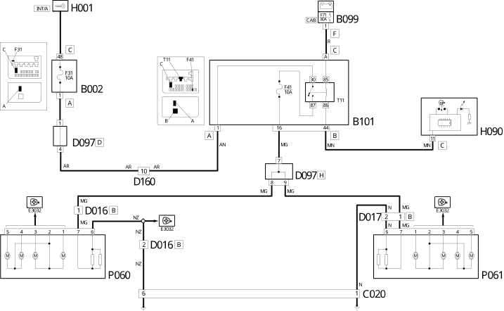

E3030 DEMISTING REARSCREEN AND REAR VIEW MIRRORS WIRING DIAGRAM
- Path
- Electrical equipment > 1 ELECTRICAL FUNCTIONS > E30 ELECTRICALLY ACTIVATED DEVICES > E3030 HEATED REAR WINDSCREEN AND DOOR MIRROR DEFROSTING > E3030 DEMISTING REARSCREEN AND REAR VIEW MIRRORS WIRING DIAGRAM
- Kind
- topic
- Applies to
- all engines; all production periods
- Interactive page
- https://sloeber94.github.io/elrnDB-fDct/en/#/244001746
Applies to: all engines; all production periods
Wiring Diagram

Components
Component code | Description | Reference to the assembly |
|---|---|---|
JUNCTION UNIT UNDER DASHBOARD | - | |
MAXI FUSE BOX ON BATTERY | - | |
OPTIONAL JUNCTION UNIT UNDER THE DASHBOARD | - | |
LEFT REAR EARTH | - | |
RIGHT REAR EARTH | - | |
ADDITIONAL DASHBOARD/LEFT FRONT DOOR COUPLING | - | |
ADDITIONAL DASHBOARD/RIGHT FRONT DOOR COUPLING | - | |
SHORT CIRCUITING COUPLING | - | |
RIGHT REAR/RIGHT SWING DOOR COUPLING | - | |
LEFT REAR/LEFT SWING DOOR COUPLING | - | |
DASHBOARD/OPTIONAL DASHBOARD COUPLING | - | |
OPTIONAL DASHBOARD/LEFT REAR COUPLING | - | |
RIGHT REAR/OPTIONAL DASHBOARD COUPLING | - | |
SWITCH CONTROL PANEL | ||
RIGHT HEATED REAR WINDSCREEN | - | |
LEFT HEATED REAR WINDSCREEN | - | |
DRIVER'S DOOR MIRROR | ||
RIGHT EXTERNAL REAR VIEW MIRROR | ||
- | ||
- | ||
- | ||
- | ||
- | ||
- | ||
- |
Topics linked from this page (18)
- B002 JUNCTION UNIT UNDER DASHBOARD
- B099 MAXI FUSE BOX ON BATTERY
- B101 OPTIONAL JUNCTION UNIT UNDER THE DASHBOARD
- C030 LEFT REAR EARTH
- C031 RIGHT REAR EARTH
- D016 ADDITIONAL DASHBOARD/LEFT FRONT DOOR COUPLING
- D017 ADDITIONAL DASHBOARD/RIGHT FRONT DOOR COUPLING
- D097 SHORT CIRCUITING COUPLING
- D150 RIGHT REAR/RIGHT SWING DOOR COUPLING
- D152 LEFT REAR/LEFT SWING DOOR COUPLING
- D160 DASHBOARD/OPTIONAL DASHBOARD COUPLING
- D162 OPTIONAL DASHBOARD/LEFT REAR COUPLING
- D172 RIGHT REAR/OPTIONAL DASHBOARD COUPLING
- H090 SWITCH CONTROL PANEL
- P053 RIGHT HEATED REAR WINDSCREEN
- P054 LEFT HEATED REAR WINDSCREEN
- P060 DRIVER'S DOOR MIRROR
- P061 RIGHT EXTERNAL REAR VIEW MIRROR